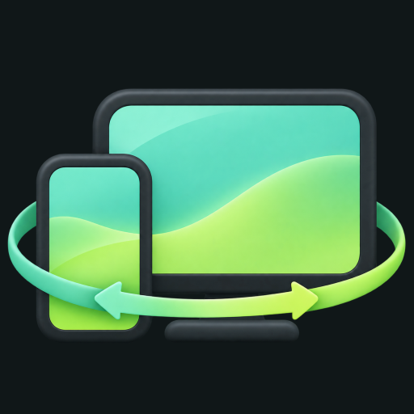
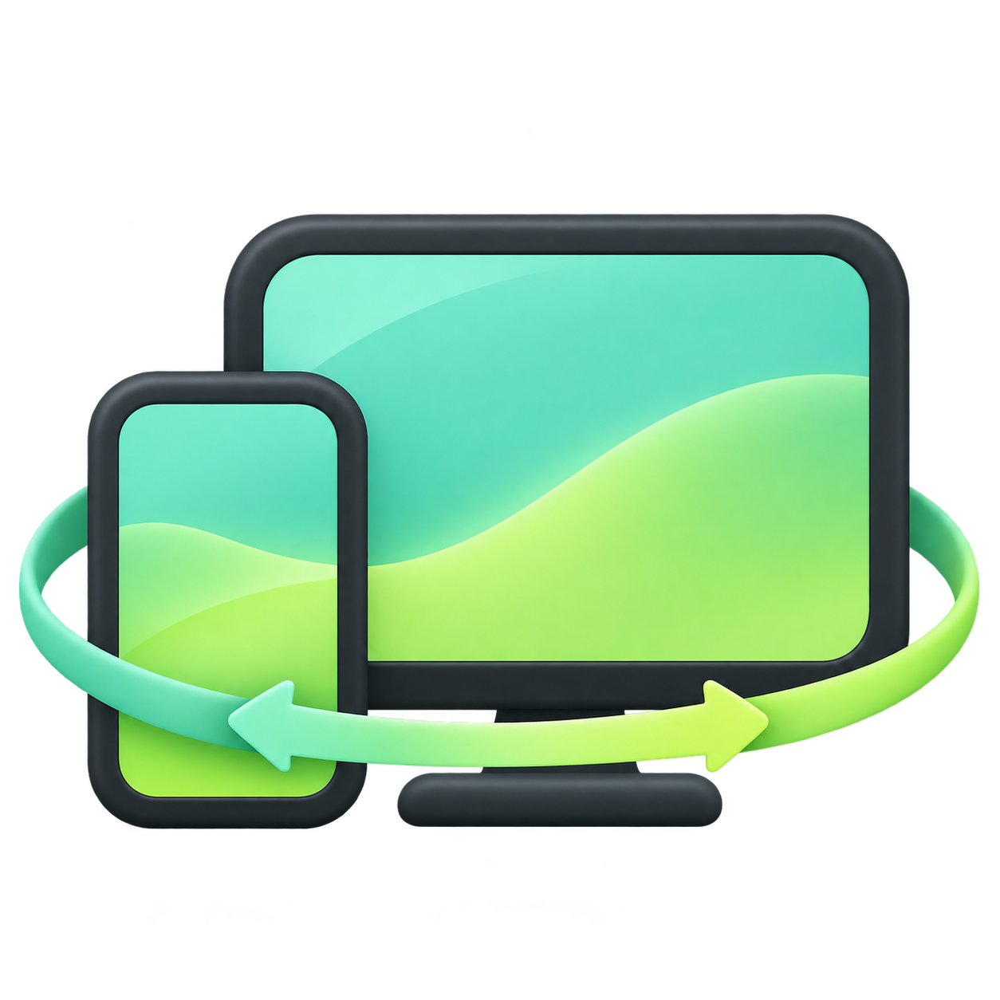
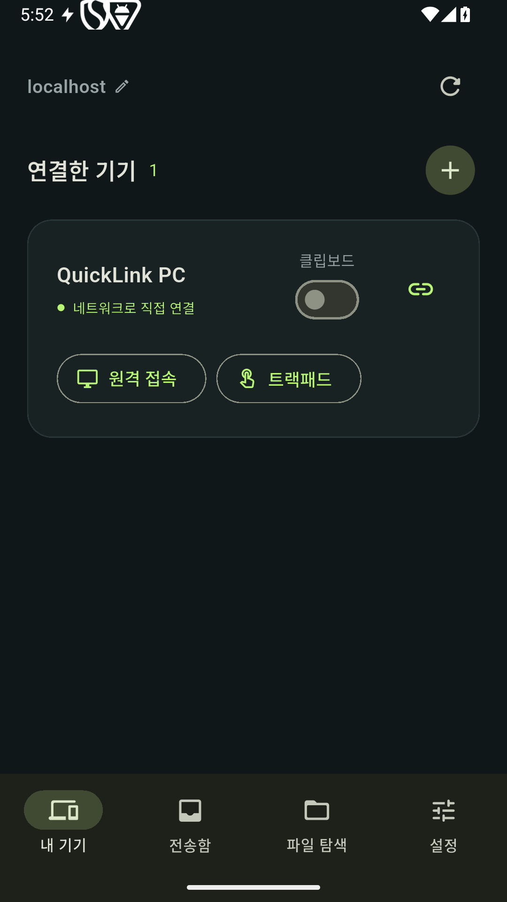
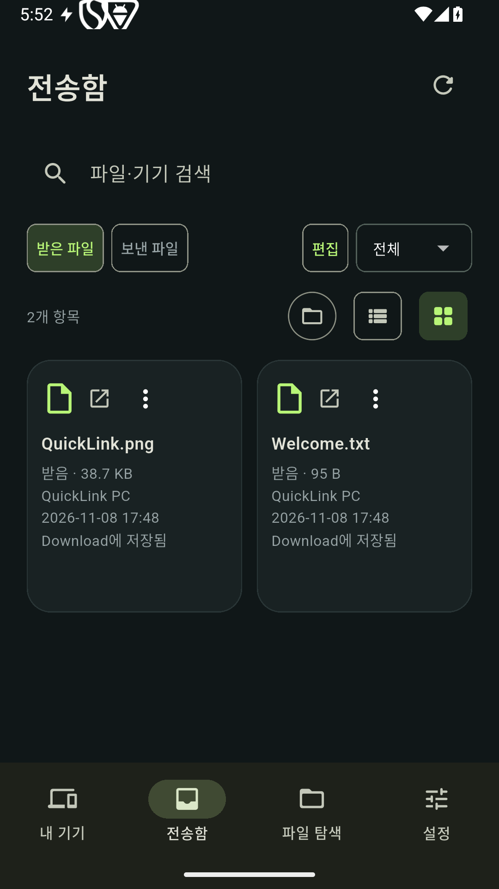

파일은 오가고,
내역은 한곳에.
파일과 폴더를 보내고, 받은 파일과 전송 내역을 전송함에서 확인하세요. 목록과 격자 중 편한 방식으로 볼 수 있습니다.

QuickLink.ANDROID + LINUX
휴대폰에서 복사한 문장, 방금 찍은 사진,
PC에 있는 파일까지. 내 기기 사이를 자연스럽게.
무료 · 내 기기 승인으로 연결

내 기기 연결하나로 이어지는 일상
앱을 바꿔 가며 내게 다시 보내던 일을
연결된 기기 사이에서 바로 이어가세요.
파일과 폴더를 보내고, 받은 파일과 전송 내역을 전송함에서 확인하세요. 목록과 격자 중 편한 방식으로 볼 수 있습니다.
연결된 기기로 텍스트를 공유하고, 사진 동기화를 켜면 새로 촬영한 사진을 PC로 전달합니다. 필요한 권한은 직접 선택하세요.
Android 클립보드 안내 ↗원격 화면으로 PC의 작업을 이어가거나, 모바일 트랙패드로 포인터를 움직이세요. 연결 요청을 승인한 기기와 사용합니다.
원격 화면·입력은 운영체제의 허용이 필요합니다.내 기기를 위한 공간
내 기기에서 연결과 클립보드를 관리하고, 전송함에서는 파일을 바로 찾아보세요. 필요한 기능을 가까이에 두었습니다.


처음 연결하는 방법
Android는 Google Play에서, Linux PC는 아래 설치 파일로 시작합니다.
앱을 열고 내 기기를 선택해 연결합니다. 외부에서는 서로 접근 가능한 VPN 연결을 사용할 수 있습니다.
기기의 연결 요청을 승인하세요. 클립보드와 사진 동기화는 필요한 기능만 켜면 됩니다.
내 기기에서 시작하세요
Google Play 정식 버전
Android 8.0 이상
Ubuntu · Debian용 설치 파일
다른 배포판은 압축본을 이용하세요.
Windows 배포를 준비하고 있습니다.
정식 설치 파일은 아직 없습니다.
Ubuntu·Debian은 .deb 파일만 받으면 됩니다. 설치 앱으로 열어 인증을 마치세요. 설치 후 다운로드한 파일은 삭제해도 됩니다. 압축본은 압축을 푼 뒤 quicklink-setup으로 설치합니다.
Linux x64 · GTK 3 · PulseAudio 필요. 기본 검증 환경: Ubuntu 26.04. Wayland 원격 화면·입력은 데스크톱의 승인과 지원에 따라 동작합니다.
FAQ
기기들이 서로 접근할 수 있으면 연결할 수 있습니다. 같은 네트워크가 아니라면 VPN 등으로 경로를 마련해야 합니다. 특정 VPN 브랜드에만 의존하지 않으며, 연결 가능 여부는 네트워크 설정에 따라 달라집니다.
Android는 일반 앱의 백그라운드 클립보드 읽기를 제한합니다. 앱 안에서의 공유와 공유 메뉴를 사용할 수 있지만, 기존 키보드를 유지한 상태의 자동 전달에는 별도 보조 연결이 필요할 수 있습니다. PC에서 모바일로 전달하는 기능, 새 사진 동기화와는 별개입니다.
사진 동기화는 기능을 켠 뒤 연결된 동안 새로 촬영한 사진을 전달합니다. 기존 사진 보관함 전체를 자동 전송하는 기능이 아닙니다. 사진 접근 권한과 동기화 여부는 직접 설정할 수 있습니다.
앱의 설정 → 앱 정보 → 업데이트 확인에서 새 버전을 적용합니다. .deb 설치본은 OS 인증창을 사용합니다. 제거는 소프트웨어 관리 앱이나 앱의 설치 관리에서 진행하며, 받은 파일과 연결 설정은 보존합니다.
앱 소스와 개발자 베타는 비공개 저장소에서 관리합니다. 공개 다운로드 저장소는 정식 PC 설치 파일과 업데이트 정보를 제공합니다. 사용한 오픈소스 구성요소의 고지와 필요한 대응 소스는 앱 정보와 각 릴리스 첨부 파일에서 확인할 수 있습니다.
라이선스·재빌드 안내 ↗